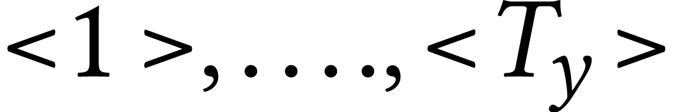

[main]Notes on Programming and Others
[main]Notes on Programming and Others
[main]Notes on Programming and Others
This article discusses the attention mechanisms both as an extension to the encoder-decoder RNN models, and as a fundamental component to the Transformer architecture. It serves as a record of my learning process and a reference for the future use.
Machine translation can be viewed as constructing conditional language models that generate the most probable output in a target language for a given input in the other source language. To express this in a mathematical way:

Here, x and y denote the input and output sequence respectively, while superscripts in angle brackets () indicate the position of each word within the sequence. Traditionally, a method called statistical machine translation (SMT) was the dominant approach (as used in early versions of Google Translate). SMT models are trained on large amount of parallel corpra, and analyzes these corpora to identify statistical relationships between words, phrases, and sentence structures in different languages.
During the 2010s, another method called neural machine translation (NMT) rapidly gained popularity following the successful application of RNN models to translation tasks. A 2014 paper demonstrated how long-short-term memory (LSTM) cells could be employed to address sequence-to-sequence problems. The idea is to use an encoder LSTM to read the input sequence, one timestep at a time, generating a fixed-dimensional vector representation, which was then decoded by a second LSTM to produce the corresponding output sequence.
To better understand this architecture, we will build an encoder–decoder network to solve a relatively simple task: converting human-readable date strings into the ISO date format. The complete code for this part can be found here.
So here are some examples of our translation task:

First we need to prepare the training dataset. We use faker to generate random dates, and format them in random formats:
def load_date(): dt = fake.date_object() try: human_readable = format_date(dt, format=random.choice(FORMATS), locale='en_US') human_readable = human_readable.lower() human_readable = human_readable.replace(',','') machine_readable = dt.isoformat() except AttributeError as e: return None, None, None return human_readable, machine_readable, dt
These are some samples from our dataset:
[('saturday june 29 1996', '1996-06-29'),
('15 march 1978', '1978-03-15'),
('thursday december 28 2023', '2023-12-28'),
('wednesday december 31 1980', '1980-12-31'),
('apr 5 1995', '1995-04-05')]